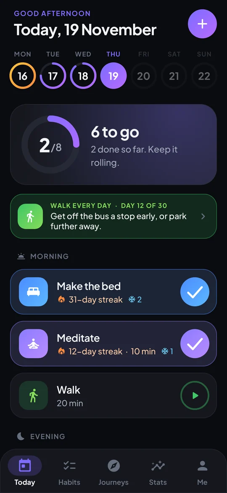
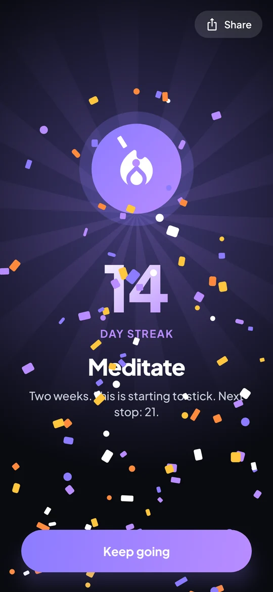
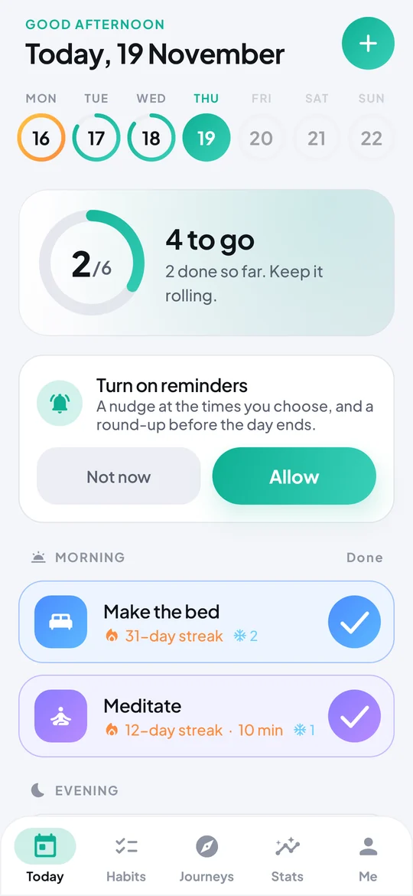
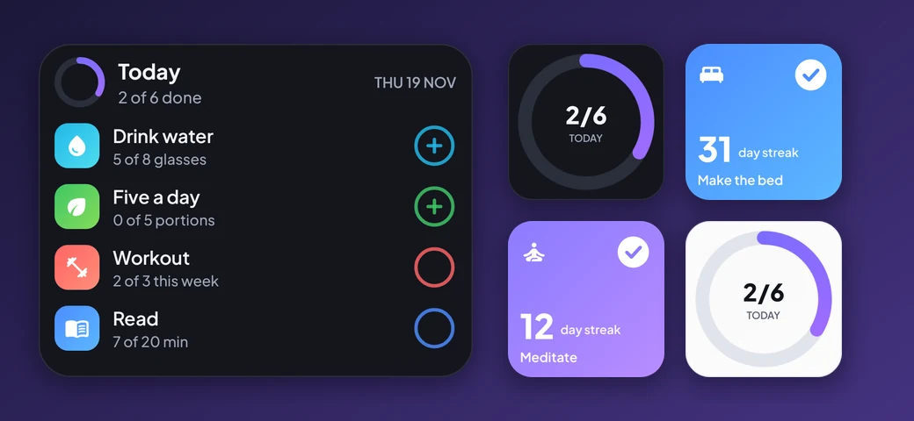

Small habits, kept.
MyHabits is a habit tracker for Android. Tick off what you did, watch the day's ring fill, and keep your streaks going. It celebrates the milestones, reminds you at the times you choose and shows you how you are really doing.
It is free, with no adverts and nothing to unlock. There is no account, and the app cannot go online, so your habits stay on your phone.
Free, with nothing to unlock. Android 8 or later. No ads, no accounts. Compare · Release notes
Chrome may say the file might be harmful. It shows this for app files that do not come from Google Play. Choose Download anyway.
- Make the bed31-day streak
- Drink water8 of 8 glasses
- Walk20 minutes
- Read12-day streak
How it works
A habit sticks when it is small, when you can see it adding up, and when a missed day is not the end of it. MyHabits is built around those three things.
Pick a few habits
Choose from 120 ready-made ones or write your own. Say how often, what time of day, and whether it is a tick, a count, a timer or something you are giving up.
Tick them off
Open Today and tap. Swipe right to finish a habit, left for a rest day. The ring fills, and a perfect day gets a celebration.
Watch it add up
Streaks grow, badges unlock and your level rises. Stats shows the weeks and months, and which days of the week let you down.
What it looks like
Near-black, with a colour for every habit and one accent you choose. There is a light theme too.

TodayThe week across the top, today's ring, and your habits by time of day. 
A streak milestoneA full-screen moment with confetti when a streak reaches a milestone. JourneysTwelve 30-day programmes, each with its own colour. A journey in progressThe day you are on, today's line of guidance and all thirty days. StatsYour level, the totals, and this week against last. A habit's own pageIts streak, its next milestone and a calendar you can correct. BadgesThirty-eight to earn, in six groups, bronze to the top tier. 
Light themeThe same app in its light look, with a teal accent.

Everything is in, and all of it is free
You can use MyHabits as a plain tick list and never open a menu. The rest is there for when you want it.
- Four kinds of habit
- A tick for done or not done. A count, such as eight glasses of water. A timer, such as twenty minutes of reading. And a quit habit that counts the days since you stopped.
- Any schedule
- Every day, chosen weekdays, a number of times a week, every few days, or set dates in the month. A habit only appears on the days it is due.
- Streaks that are fair
- A planned rest day does not break a streak. Every seven days in a row earns a freeze that covers one missed day, and a holiday break pauses everything until you are back.
- Celebrations
- A burst on every tick, and a full-screen moment with confetti, sound and a buzz for streak milestones, a perfect day, a new badge and a new level. One setting turns them down or off.
- An animated opening
- The ring draws itself, then greets you with how today stands and your best streak. Tap to skip it, or switch it off.
- 120 ready-made habits
- Eleven groups, from mornings and movement to money and home, with search. Each comes with a sensible goal, schedule and icon you can change.
- Twelve 30-day journeys
- Walk every day, sleep well, cut down on sugar, stop smoking and eight more. Each starts small and adds a habit or raises a target on days 8 and 22.
- Reminders with buttons
- Up to six times a day for each habit. Each reminder has Done, Snooze and Rest day buttons, and stays quiet once the habit is finished.
- A round-up, not a nag
- One evening notification lists what is left, and says nothing when nothing is. A morning plan is there if you want it.
- Statistics
- This week against last, a month of rings, a heat-map of every day, your best weekdays, a twelve-week trend, and every habit ranked.
- A page for every habit
- Its streak and next milestone, best run, on-target rate, a calendar where any past day can be corrected, and its own charts.
- Levels and 38 badges
- Ten points for a habit finished, twenty-five for a perfect day. Badges in six groups, bronze to the top tier, each with an unlock animation.
- Notes and mood
- A note on any habit on any day. An optional daily mood check-in, off until you switch it on, with a chart of mood against habits.
- Three widgets
- Today's habits with a tick beside each, today's ring, and one habit with its streak. They follow the app's dark or light look.
- Share a picture
- A card for a streak, a badge, a perfect day or your progress, sent through your phone's own share sheet. Nothing is uploaded by the app.
- Dark, light and six accents
- A near-black look made for the app, a clean light one, or whichever your phone is using, with a colour for every habit.
- Backup you control
- Save everything to one file, restore it on a new phone, or pick a folder and have a copy saved there each day. The newest seven are kept.
- Export to a spreadsheet
- An Excel file with a sheet of your habits, a sheet of every day logged, and a sheet for mood.
Streaks that survive real life
Most trackers reset a streak to nought the first time you miss a day, which is when most people give up. MyHabits counts a streak the way a reasonable person would.
Rest daySwipe a habit left, or use the Rest day button on its reminder. The day is set aside and the streak carries on.FreezeSeven days in a row earns one, and you can hold two. A freeze covers a missed day by itself, and the app tells you when it has.BreakGoing on holiday, or ill? Pause every habit until a date you pick. Nothing is counted against you while you are away.Not dueA habit set for weekdays is not missed on a Saturday. A habit set for three times a week is judged on the week.
If you would rather have the strict version, freezes can be switched off in Me.
Twelve journeys, thirty days each
A journey is a ready-made plan. It adds one or two habits on day 1, builds on them on day 8, and again on day 22, with a line of guidance for every day. When the thirty days are up, the habits are yours to keep.
- Movement
- Walk every day, from ten minutes to thirty. Move more at work, with breaks from sitting and a lunchtime walk.
- Rest
- Sleep well, with a set bedtime and a wind-down. Better mornings, with the same wake time and some daylight.
- Giving things up
- Stop smoking, one smoke-free day at a time. Cut down on sugar. Less phone, with the first and last hour of the day taken back.
- A steadier head
- A calmer mind, with a few quiet minutes a day. Handle stress. Build confidence with one small win a day.
- Getting things done
- Get more done: a plan each morning, the hard thing first, and a routine for finishing work.
- And the dog
- A happier dog: two proper walks, some training or play, and a weekly check-over.
Where a journey mentions a disease, it says what public guidance from the NHS and Cancer Research UK says: that being active, keeping a healthy weight, drinking less and not smoking each lower your risk. It does not promise an outcome. See the terms of use.
What it asks of your phone
MyHabits has no access to the internet, your camera, microphone, location, contacts or photos. It can read and write only the files and the one folder you pick yourself.
| Access | What MyHabits does with it | What it never does |
|---|---|---|
| Notifications | Shows the reminders you set, the evening round-up and the morning plan. Android asks you to allow this. | Send you offers, tips or anything you did not ask for. |
| Alarms and reminders | Rings a reminder on the minute you chose. Without it reminders still arrive, a little late. | Wake the phone for any other reason, apart from redrawing a widget just after midnight. |
| Starting after a restart | Puts your reminders back after the phone restarts, the app updates or the clock changes. | Keep running in the background. It does its job and stops. |
| Vibration | A short buzz when you tick a habit or reach a milestone, if that switch is on. | Buzz at any other time. |
| A file or folder you pick | Writes a backup or a spreadsheet where you say, reads a backup you choose, and saves the daily copy in the folder you chose. | Look at anything else in your storage. |
| Internet access | None. The app does not ask for it. | Send your habits, your notes, your mood or anything about you anywhere. |
The detail is in the privacy policy.
Your habits are your business
Nothing is collected
Your habits, history, notes and mood are kept on your phone. The developer runs no servers and receives nothing.
It cannot go online
The app does not hold Android's internet permission, so there is no way for it to send anything out. This site has no cookies and no tracking.
No accounts, no adverts
There is nothing to sign up for, nothing to pay for and no advertising in the app.
Free, without the adverts or the upgrade
MyHabits has no paid version and carries no adverts. Going by their makers' own Google Play listings, well-known habit trackers on Android differ on both.
- No adverts
- Habit Tracker - Habit Diary by Leap Fitness Group is labelled on Google Play as containing ads.
- Nothing held back
- HabitNow Daily Routine Planner is labelled as having in-app purchases, and its listing marks some features as Premium.
- An honest comparison
- Loop Habit Tracker is also free, with no adverts, and is open source. The comparison says where it and MyHabits differ.
- Stays on the phone
- MyHabits cannot go online at all, so nothing about your habits can be sent anywhere.
Questions
Is MyHabits really free?
Yes. There is no paid version, no subscription, no trial and no adverts, and nothing in the app is locked. See the comparison.
Is MyHabits on Google Play?
No. MyHabits is a personal project and is downloaded from this site as an Android app file. It needs Android 8 or later, which covers almost every phone in use.
Does it need the internet?
No. The app does not ask Android for internet access at all, so it cannot go online. Everything works on a plane or with no signal.
Where are my habits kept?
On your phone, in the app's private storage. They also go into any backup file you save, into the backup folder if you set one, and into your phone's own Google backup if you have that switched on.
What happens to a streak if I miss a day?
If the day was a rest day or part of a break, nothing. Otherwise a freeze covers it if you have one: you earn a freeze for every seven days in a row and can hold two. With no freeze left, the streak starts again and your best run is kept.
Can I fill in a day I forgot to tick?
Yes. Tap any earlier day in the week strip on Today, or any day in a habit's calendar, and change it. Streaks, statistics and badges are worked out again.
Why did a reminder arrive late, or not at all?
Android holds back alarms from apps it thinks you are not using, and some phones are strict about it. In the app, open Me, then Reminders not arriving. It checks the three settings that matter and sends a test.
Do the widgets update by themselves?
Yes. They redraw whenever a habit changes and just after midnight. A tap on a tick marks the habit without opening the app.
How do I move to a new phone?
In Me, under Backup, choose Save a backup file. Send the file to the new phone, install MyHabits there and choose Restore from a backup. Habits, history, badges and settings all come across.
Are the health statements in the journeys reliable?
They are short summaries of public guidance from the NHS and Cancer Research UK, worded as lowering a risk and never as a promise. MyHabits is not medical advice. The detail is in the terms of use.
Is there an iPhone or web version?
No. MyHabits is an Android app only.
How do I update MyHabits?
Download the newest version from this site and install it over the one you have. Your habits and history are kept. The app cannot check for updates, because it cannot go online. New versions are listed in the release notes.
Getting MyHabits
MyHabits is a personal project and is free, with no paid version. It is downloaded from this site as an Android app file and is not on Google Play. It runs on phones and tablets with Android 8 or later.
When you download, Chrome may warn that the file might be harmful. It shows this warning for app files that do not come from Google Play; choose Download anyway. If you want to be sure the file is the real one, compare it with the checksum in the release notes.
Open the downloaded file to install it. The first time, Android asks you to allow your browser to install apps. Google Play Protect may also step in, because MyHabits is an app it has not seen before: choose More details, then Install anyway. To update, install the latest version over the one you have: your habits, history and settings are kept. What changed in each version is in the release notes.
MyHabits keeps a record and gives encouragement. It is not medical advice, and a journey is a general plan, not one made for you. If you have a health condition, are pregnant, or are changing how much you exercise, eat or drink, check with a doctor or pharmacist first. The detail is in the terms of use.
The same developer makes other free Android apps. For a question, a problem, or anything about your data, open an issue on GitHub.